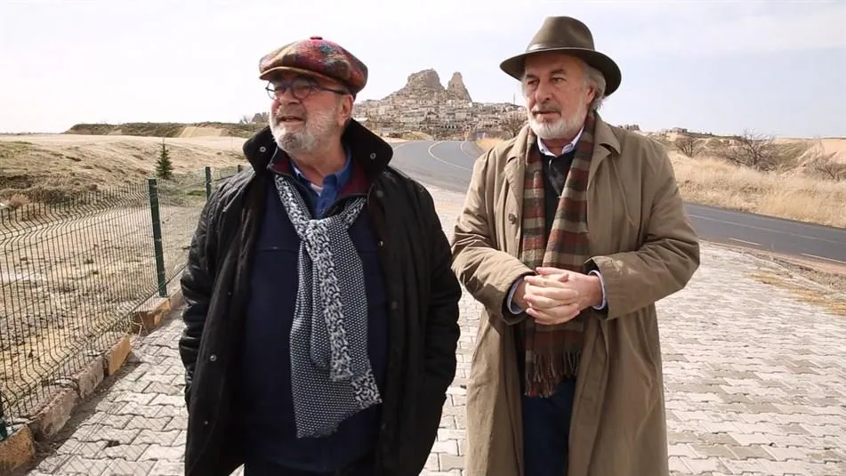

Mehmet Yaşin ve Teoman Hünal — İstanbul Lezzet Durakları
İstanbul'un zengin mutfak kültürünü keşfetmek denildiğinde akla gelen ilk isimlerden ikisi, gastronomi yazarı Mehmet Yaşin ve The North Shield Pub zincirinin kurucusu, içki kültürü uzmanı Teoman Hünal'dır.

Lezzet Duraklarını AramaBul ile Keşfet!
- Eminönü: Hacı Bekir Lokumları, Filibe Köftecisi, Hocapaşa Pidecisi, Hafız Mustafa Tatlıcısı, Orient Express
- Ortaköy: Feriye Lokantası
- Beykoz: Kök Kardeşler
- Harbiye: Dragon Restaurant, Dubb Indian, La Petite Maison
- Fatih: Ersoy Turşuları, Öz Kilis Lahmacun, Şeref Büryan, Unkapanı Pilavcısı, Fatih Sarmacısı
- Balat: Forno, Cumbalı Kahve, Coffee Department
- Şile: Marin Balık, Çamlık Mercan Köşk Restaurant
- Kadıköy: Menemenci Cemal Usta, Borsam Taşfırın Lahmacun, Reks Kokoreç, Ciğerci Hulusi, Gakgoş Usta
- Karaköy: Mükellef, Karaköy Çorbacısı, Nato Esnaf Lokantası, Burger Lab
- Moda: Çay Tarlası, Pişi, Basta, Asuman, Aida
- Sarıyer: Sarıyer Börekçisi, Pideban, Sarıyer Muhallebicisi, Anzer Sofrası
- Beyoğlu: Beyoğlu Söğüş Kelle, Canım Ciğerim, Kalkanoğlu Pilavcı
- Beşiktaş: Balkan Lokantası, Soydan Turşuları, Sinop Mantı
- İstanbul (Fine Dining): Şans Restaurant, Mikla Restaurant, Mürver Restaurant, Spago, Sunset
- Büyükada: Yalovalı Kardeşler Şarküteri, Prinkipo, İstikamet Fıstık Ahmet, Fıçı, Büyükadalı, Dolci Pastanesi, Milto, Büyükada Roma Dondurmacısı
- Yenibosna: İkizler Kuru Keyfi, Sahra Erzurum, Hüsmen Ağa, Nalia Karadeniz Mutfağı
- Cihangir: Savoy Pastanesi, Jash İstanbul, Asri Turşucu
- Ümraniye: Sarıhan İşkembe, Kalbur Et Kebap, Karagöz Sofrası, Yaşar Usta
- Ataşehir: Hatay Gurme, Dedecan Ocakbaşı
- Dünya Mutfağı: Zeferan Restaurant (Azeri mutfağı), Asuman Restoran (İran mutfağı), Ayaspaşa Rus Lokantası (Rus mutfağı), Çam Süt Mangal Restaurant (Kore mutfağı), Pera Thai (Tayland mutfağı), Tandoori İstanbul (Hint mutfağı), Tahin (Lübnan mutfağı)
- Tuzla: Merkez Et Lokantası, Tatlı Konyalılar Etli Ekmek Fırın Kebap, Meraklı Köfteci, Sandzak Balkan Mutfağı, Has Fırın
- Yeşilköy: Şefo Mantı, İhtiyar Balıkçı Restaurant, Yeşilköy Roma Dondurmacısı, Dilim Pizza, Gelik Restaurant
- Reşitpaşa: Havan'dan, Bysteak Steakhouse, Odun Pizza